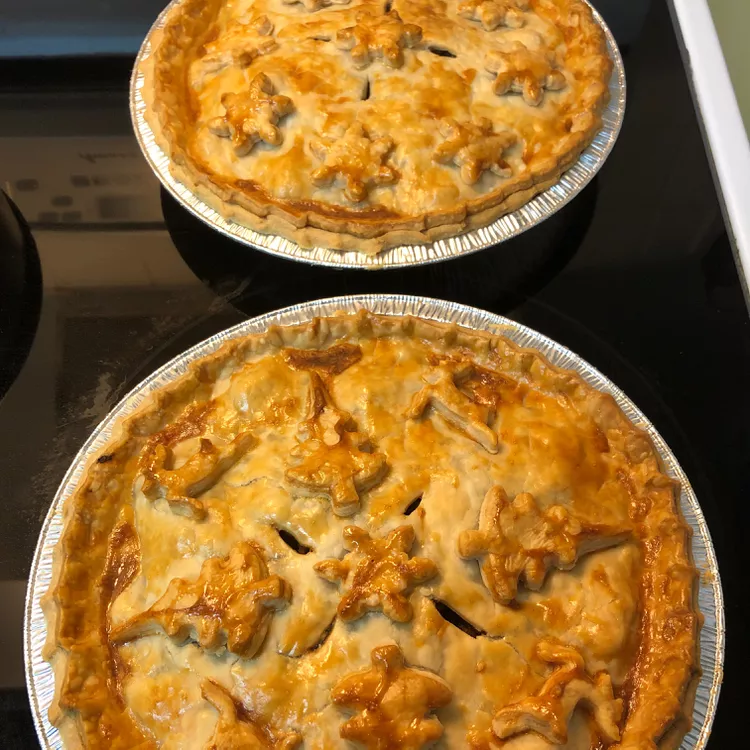

Traditional French Canadian Tourtiere

Description
Originally from my grandma's recipe box, the secret of this delectable Christmas treasure is found in the ground cloves and chicken seasoning. We've always made our tourtieres en grand (in large quantity), as they freeze great making them a terrific quick fix throughout the busy holiday season!
Ingredients
- 8 pounds ground beef
- 4 cups finely chopped onion
- 6 cups water
- 2 teaspoons pepper
- 1 teaspoon ground cinnamon
Steps
- Preheat oven to 400 degrees
- Season with salt, pepper, allspice, cloves, cinnamon
- Drain liquid from pot into a bowl
- Scrape and discard fat from the chilled liquid